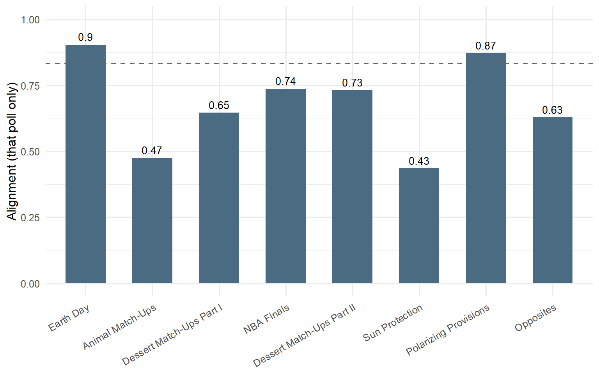
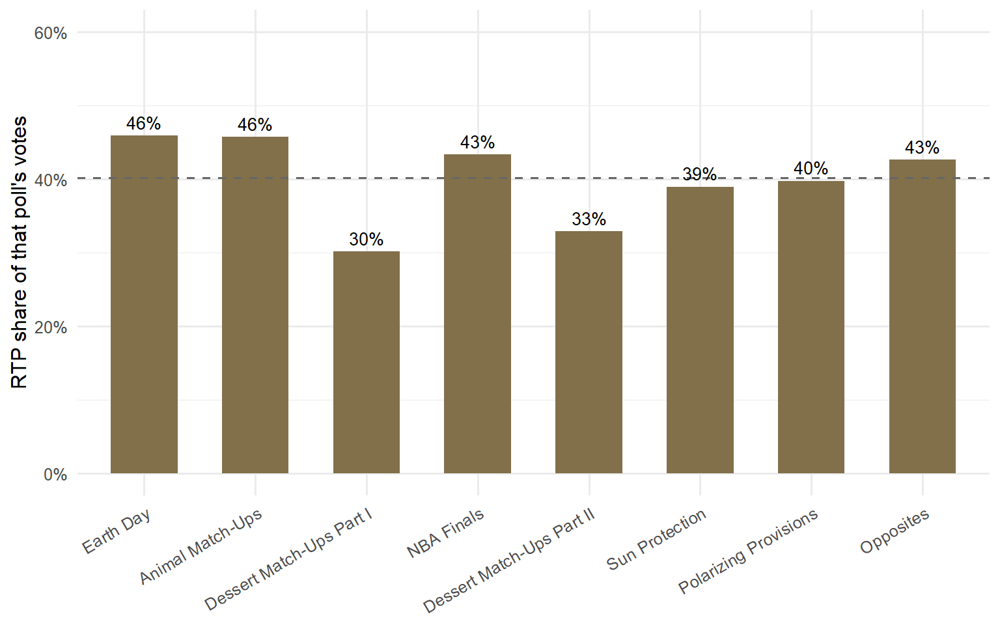

78 polls conducted & 4096 votes counted
Highest vote count: 75 for No (Poll: Polarizing Provisions, Question: Is cereal a soup?)
Most decisive vote ever: Ice Cream over Frozen Yogurt, 65–11 (Poll: Dessert Match-Ups Part I, Question: Frozen; p = 1.8^{-10})
Most unanimous vote: Curve with a resounding 87.1 % of the votes (Poll: Opposites, Question: What’s the opposite of a straight line?)
Lowest vote count: 3 for Seasonal Beer (Poll: Holiday Drinks, Question: holiday drinks)
Least unanimous vote: Seasonal Beer with 7.89 % of the votes (Poll: Holiday Drinks, Question: holiday drinks)
Closest vote(s) ever: a 3-way tie for closest — see the tie tracker for the full list.
3 questions have ended in a dead-even split so far:
| Poll | Question | Split |
|---|---|---|
| Cheese Snacks | cheese snacks | 21-21 (Goldfish vs Cheez-It) |
| Eggs | In a pot | 13-13 (Poached vs Hard/Soft Boiled) |
| Dessert Match-Ups Part II | Cinnamon | 23-23 (Churro vs Cinnamon Bun) |
Cumulative correlation between HQ’s and RTP’s vote shares, across every option RTP has voted on since it joined the poll at Earth Day.
0.83 cumulative Alignment Index (Earth Day → Opposites)

Most aligned poll: Earth Day (0.9)
Least aligned poll: Sun Protection (0.43)
9 questions where HQ and RTP would have crowned different winners on their own, since RTP joined the poll.
Biggest HQ/RTP gap on record: Sunscreen (Sun Protection) — HQ 86% vs RTP 63.3% for Lotion (p = 0.038). It’s also the only office gap that’s cleared statistical significance so far.
RTP has cast 1146 of the 2849 votes counted since it joined — 40.2% of the total. That share hasn’t trended up or down so much as bounced around a fairly consistent range, poll to poll:
